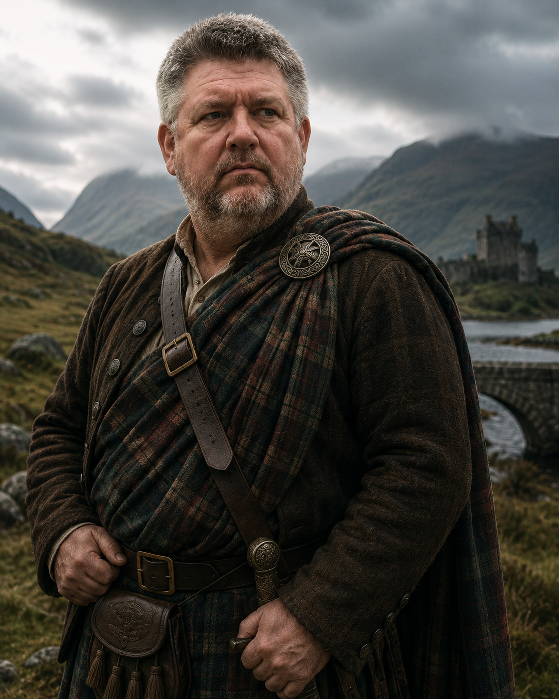

The Sett
His plaid is the sett of the MacBrae — bog-brown, pine-green, and a single thread of dried-blood red that the clan weavers say marks the families who held the bridge in the old wars.

An Tighearna mu dheireadh — The Last Laird
Eighth Laird of Glen Eachach. Keeper of the bridge of Dùn Cailleach. The last man alive who still walks the boundary stones and speaks the names of the dead.
Read his taleThe Tale
In the shadow of Dùn Cailleach — the broken-towered keep that guards the only bridge across Loch Eachach — Alasdair MacBrae was born to a hard glen and a long inheritance. He is the eighth Laird of his line to hold the strath, and by the reckoning of the old folk, the last who will remember it as it was before the roads came.
They call him Madadh-allaidh Glas — the Grey Wolf — and the name fits twice over. Once, for the iron-grey that came early to his beard, after the year the fever took half the glen and both his sons. And again for the way he hunts a grievance: slow, patient, and never letting go of a scent. He is broad as a byre door and quiet as a held breath, and the men who mistake the quiet for softness do it only the once.
The Man
His plaid is the sett of the MacBrae — bog-brown, pine-green, and a single thread of dried-blood red that the clan weavers say marks the families who held the bridge in the old wars.
At his shoulder, a brooch older than the castle: a wolf curled around a standing stone, cast in a bronze no smith living can name. It has passed Laird to Laird since the first of the line.
The fever year took his two sons and left him no heir of his blood. He keeps their names on the boundary stones, and speaks them first each Samhain so the hills will not forget them.
A warlord by inheritance but a herdsman by temper, he would rather wait out an enemy than meet him. Thirty years of holding a thankless promise have made him very good at waiting.
The Burden
One rent goes to the Crown, in coin and cattle. The other goes to the Thing Under the Cailleach — the old pact, kept since the first MacBrae, that the bridge would stand and the glen would prosper so long as the Laird walked the boundary stones each Samhain and spoke the names of the dead aloud, so the hills would not forget them.
Alasdair has walked that boundary for thirty years. But the stones are being pulled up now — for new roads, new walls, and new men with charters and surveyors. And each stone that falls, something in the high corries grows hungrier. The cattle are thin. The mist comes wrong.
And last Samhain, for the first time in eight generations, a name answered him back.
The Glen
The MacBrae seat: a half-ruined keep on a tidal islet, joined to the road by a single arched stone bridge. Its lowest vault is older than the clan and is never unsealed.
The black water the glen is named for. Still as glass on the calmest day, and yet boats go missing on it. The drowned are said to be owed, not lost.
Thirteen standing stones ringing the high pasture. Walk them sunwise and speak the names of the dead, and the glen keeps faith. Pull one up, and the faith breaks a little.
A high, cold hollow where the snow lingers into summer. The old folk leave the first milk there and do not climb past the cairn. Whatever the pact is with, it keeps to the corrie. For now.
Surveyors' pegs march up the glen from the south, charters in hand. Progress, or ruin — Alasdair has not yet decided which, and the choice may not be his to make.
Riders are coming up the glen road. They may be the end of the MacBrae — or the only hands willing to help hold the boundary one more turn of the year.
The Campaign
Glen Eachach is built as a system-agnostic setting — drop it into any ruleset you like. The bones below are enough to start a session; the lore above is enough to fill a season.
The player characters are the strangers riding up the glen. Whatever brought them north, they arrive the week before Samhain — just as the new road reaches the first boundary stone, and just as something in the corrie begins to answer back.
Should the old pact be kept, broken, or remade? Every faction in the glen has an answer, and none of them is wholly right. The campaign is the argument played out in mist, iron, and blood.
Patient, watchful, slow to trust and slower to forgive. Treat him as a quest-giver who is himself the quest: winning his trust is a campaign arc, not a single roll. He will test the party with small, thankless tasks before he tells them what the glen truly owes.
Need numbers? Stat him as a veteran/noble warrior of the highest tier your system offers — formidable in a feud, but his real power is that the glen, the dead, and the Thing in the corrie all answer to him.
This page is a living document. Names, lore, and campaign material will grow here as the glen does.